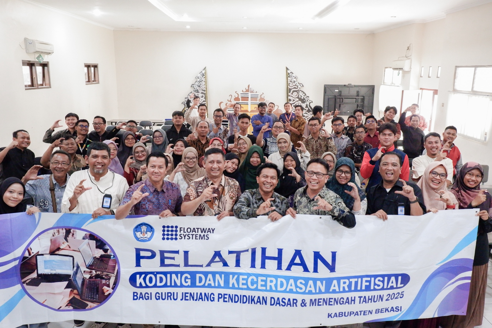
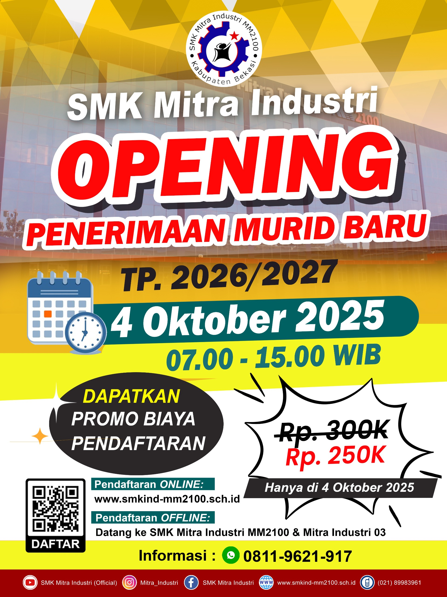
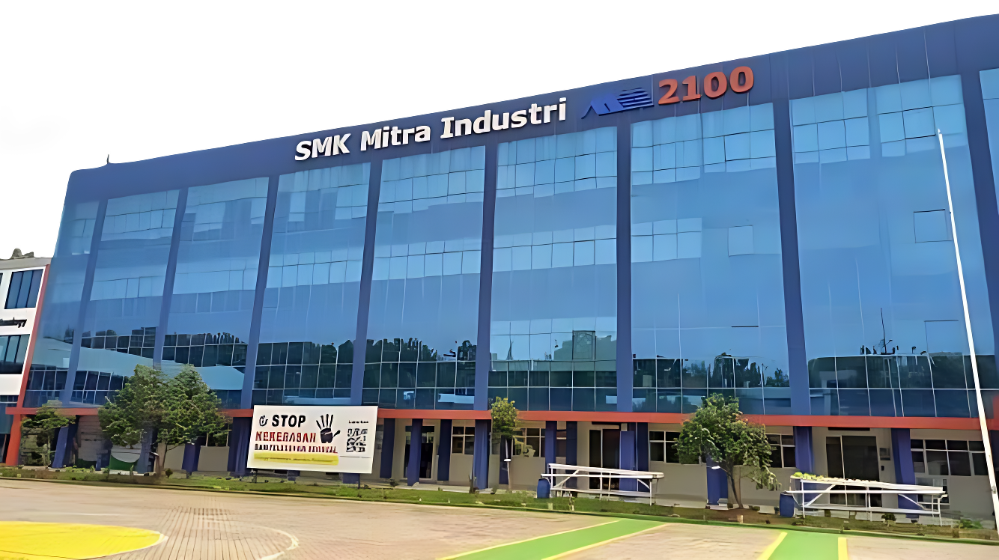

SELAMAT DATANG DI
SMK MITRA INDUSTRI
MM2100
5 Nilai Utama

Jujur

Tanggung Jawab

Disiplin

Kerja Sama

Peduli
Mengapa Memilih SMK Mitra Industri MM2100?
Pembelajaran berbasis industri, karakter kuat, dan kesiapan kerja nyata.
🚀 Lihat Program

Kawasan Industri MM2100

Sistem Terpadu Link & Match

Menerapkan Budaya Industri

Kerja Sama Sekolah, Kampus & Industri
Segitiga Emas Komunikasi

Program Peminatan BMW+

Alur pembelajaran dinamis berdasarkan peminatan BMW plus: Bekerja, Melanjutkan Kuliah, Wirausaha, Magang ke Jepang, dan Ausbildung ke Jerman.
Jaringan Cabang & Afiliasi
Jejaring sekolah dan mitra industri untuk mendukung ekosistem pendidikan dan karier siswa.

SMK 1 Babelan Kabupaten Bekasi adalah sekolah afiliasi kerjasama pendampingan Program Link & Match PT Cikarang Listrindo, Tbk PLTU Babelan dan supervisi dengan SMK Mitra Industri MM2100

SMK Mitra industri Kampus Putradarma adalah cabang dari SMK Mitra Industri MM2100

SMK Mitra industri 02 Pati adalah sekolah cabang dari SMK Mitra Industri MM2100 yang berlokasi di Sendangrejo RT.05 RW.01, Sendangrejo, Kec. Tayu, Kab. Pati Prov. Jawa Tengah

SMK Kristen 2 Klaten adalah sekolah afiliasi kerjasama sistem dan supervisi dengan SMK Mitra Industri MM2100
Berita SMK Mitra Industri MM2100
 Teknologi
Teknologi
4 Desember 2025
Diseminasi Koding dan Kecerdasan Artifisial
SMK Mitra Industri MM2100 menggelar Dissemination Program KKA (Koding dan Kecerdasan Artifisial). Peserta dari jajaran pimpinan sekolah antusias mengikuti kegiatan hybrid di Ruang Horenso.
 Inovasi
Inovasi
22 November 2025
Inovasi Siswa dan Guru di Deep Learning
Kegiatan Deep Learning Training Closing Event menghadirkan beragam inovasi dari guru dan siswa. Pelatihan ini memperkuat penerapan deep learning dalam pembelajaran sekolah.

Prestasi
04 Desember 2025
Gelar Diseminasi Koding dan Kecerdasan Artifisial, Peserta Antusias!
SMK Mitra Industri kembali menunjukkan komitmennya dalam menghadirkan pendidikan yang relevan dengan perkembangan teknologi melalui penyelenggaraan Dissemination Program KKA (Koding dan Kecerdasan Artifisial). Kegiatan ini diwajibkan bagi jajaran pimpinan sekolah, meliputi Wakil Kepala Sekolah (Wakasek), Ketua MGMP, dan Head of Department (HoD).
 Kunjungan
Kunjungan
21 Mei 2025
Wakil Bupati Bekasi Kunjungi SMK Mitra Industri
Wakil Bupati Bekasi meninjau fasilitas praktik dan kelas jurusan teknik di SMK Mitra Industri MM2100. Kunjungan ini mendorong penguatan SDM siap kerja.


Didukung oleh Perusahaan Kawasan Industri MM2100


Menu Pendaftaran Online
Penerimaan Murid Baru TP. 2026/2027
3D Virtual
Tour Sekolah
Bersiaplah untuk memulai perjalanan visual yang menarik! Temukan keindahan arsitektur modern dan ruang belajar inovatif.
Tour

Komentar